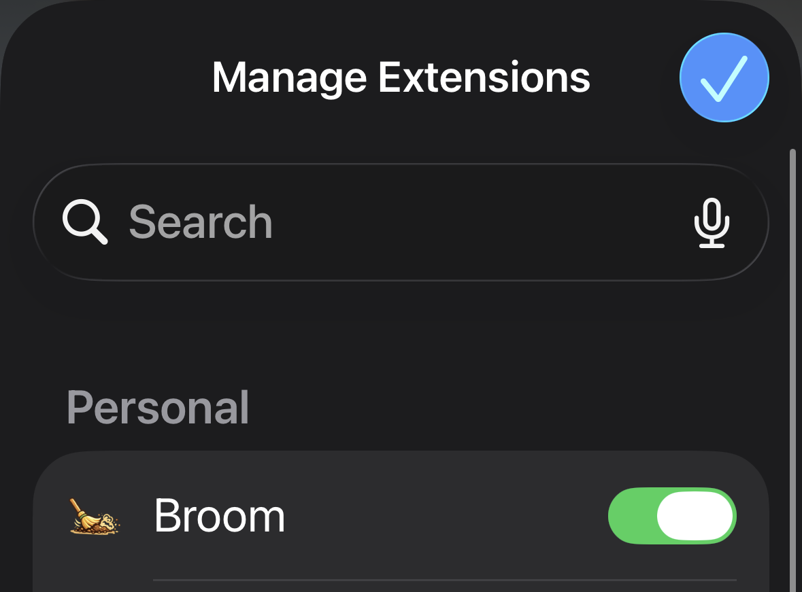

Safari on iPhone & iPad
Broom & Bloom
Sweep clutter off any website. Hide what bugs you, plant something nice in the empty space, and your changes come back every visit.
Turn on the extension
The extension runs inside Safari — it is not turned on from this app alone. Follow these steps the first time (and whenever Safari asks).
- Open Safari and go to any website.
- Tap the extensions button in the address bar (puzzle piece with lines under it).
- Tap Manage Extensions at the bottom of the menu.
-
Under Personal, turn on Broom & Bloom (it may appear as Broom).

- Tap the blue checkmark in the top-right corner to save.
- Reload the page. The floating 🧹 button appears in the bottom-right corner.
Alternate path: Settings app
- Open Settings → Apps → Safari → Extensions.
- Enable Broom & Bloom, then return to Safari.
Using Broom
- Tap the floating 🧹 in the bottom-right of a page, then pick 🧹 Broom.
- Press and hold on anything you want gone. A plain tap won’t sweep, so you can’t remove something by accident.
- Slide to aim. The highlight sits just above your fingertip so your finger never covers what you’re picking.
- Lift your finger to sweep it away. Tap Undo if you got the wrong thing.
- Tap the floating button again to stop sweeping.
Quick swipes still scroll the page. To cancel, slide onto empty space before lifting.
Planting & restoring
- 🌱 Plant — tap cleared spots to drop a plant; use Shuffle to swap it.
- ♻️ Restore — tap + on hidden elements to bring them back.
- ⚙️ Settings → Restore original removes all your changes on the current site.
- To hide the floating button, open the extensions menu, choose Broom, and turn off Show Broom.
Private by default
- Nothing about your browsing leaves your device.
- Rules live in Safari’s local extension storage.
- No account required.